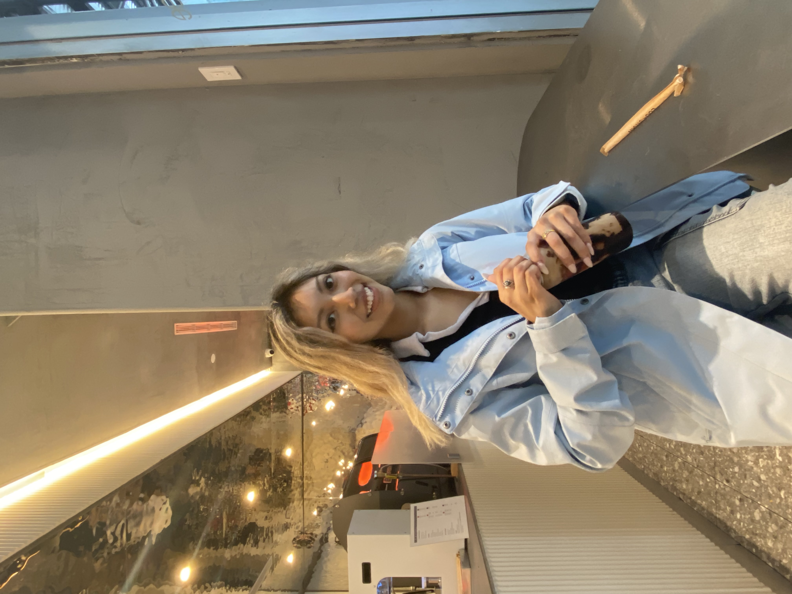

Welcome to Deanna's Website!
How to Say Deanna?
When it is comes time to pronounce my name, many people enjoy putting their own remix onto how to say it. I have been called names ranging from de-Anna, Donna, de-Na, dee-na, and so on.
The correct way to pronounce my name is day-nah.

Interests
- Coffee
- Everyday, I start my morning off with an iced mocha regardless of the season. From rain to sun to snow, be assured I have some sort of iced espresso drink in my hand.
- Musical Theater
- In high school, I participated in the musical production of Cinderella. From then on, I realized I much rather watch and appreciate musical theater rather than being a performer.
On my birthday each year, I have a tradition of going to see a Broadway musical!
- Indoor Activities
- A very interesting fact about me is that I am not a fan of the warm weather. When there is sunshine outside, I enjoy staying inside. My preferred weather is to see a bit of rain and have cold weather.
Languages Spoken
- Spanish
- As a child, my parents would always speak to me in spanish, but they did not like the idea of me speaking it. When I entered high school, I enrolled in Spanish classes and learned to speak Spanish there.
- American Sign Language
- I remember vividly the day I was introduced to ASL. It all started in the third grade. I was in gym class, and the gym teacher introduced me to a language in which communication was done through hand movements.
At that time, my nine year old self was captivated by this form of communication. Ever since that day, I taught myself sign language, and ASL is personally my favorite language!